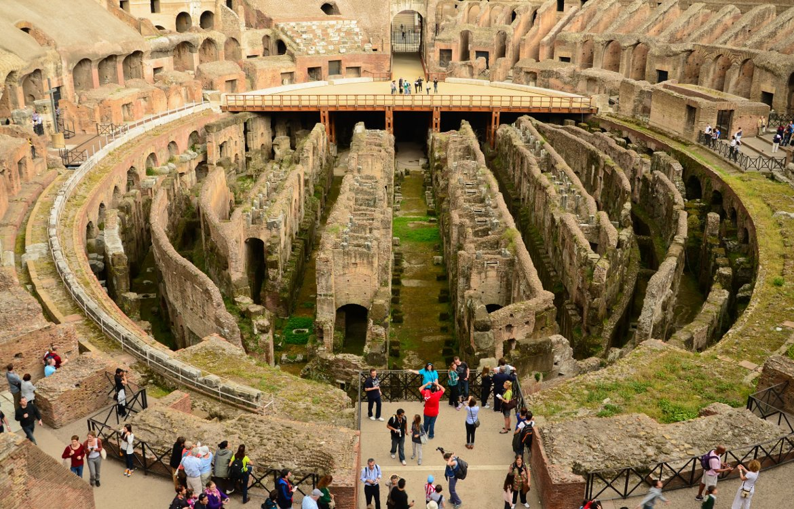

Colloseum
To visit the Colosseum in Rome, Italy, you can follow these steps:
1.Travel to Rome:
Start by booking a flight to Rome if you're not already in Italy. Rome has two major airports: Leonardo da Vinci-Fiumicino Airport (FCO) and Ciampino Airport (CIA).You can find international and domestic flights arriving at both airports.
2. Arrival in Rome:
Once you arrive in Rome, you have several options for reaching the Colosseum:Airport Shuttle or Taxi:
You can take an airport shuttle or taxi from the airport to your accommodation in Rome. Be sure to use a reputable taxi service, and make sure they use a meter or agree on a fare beforehand.Public Transportation:
Rome has an efficient public transportation system, including buses and trains. You can take a train or bus from the airport to the city center, and then use the Metro or buses to reach the Colosseum. The closest Metro station to the Colosseum is Colosseo (Line B).
3.Purchase Tickets:
To visit the Colosseum, you will need to purchase tickets. You can buy tickets online in advance to skip the lines or purchase them at the Colosseum ticket office. It's advisable to buy tickets ahead of time, especially during the busy tourist season, to avoid long queues.4. Visiting the Colosseum:
The Colosseum is located in the heart of Rome, near the Roman Forum and Palatine Hill. Once you have your tickets, you can enter the Colosseum through the designated entrance. Inside, you can explore the ancient amphitheater, learn about its history, and take in the impressive views.5. Guided Tours:
Consider taking a guided tour of the Colosseum. Many tours offer in-depth insights into the history and architecture of this iconic landmark. Some tours also include access to areas not open to the general public.
6.Respect Rules and Regulations:
While visiting the Colosseum, be sure to follow the rules and regulations set by the site management. This includes not touching or damaging any historic structures,as well as respecting the designated pathways. Things to know